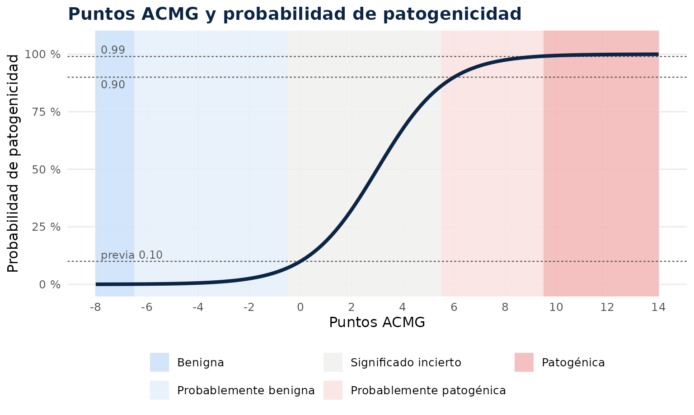
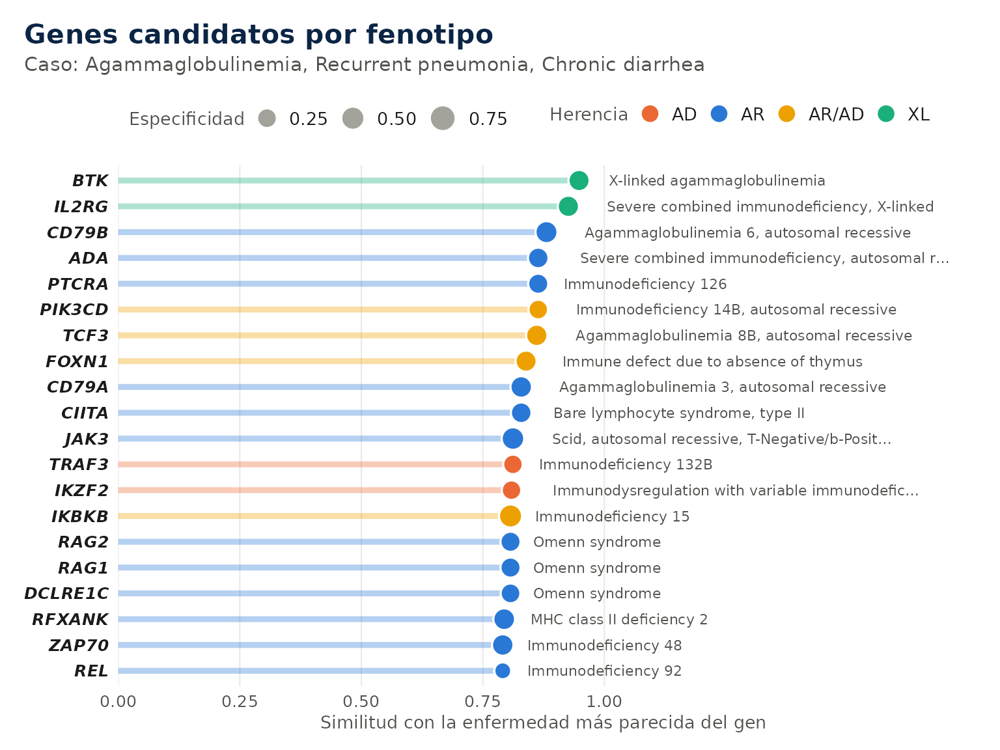
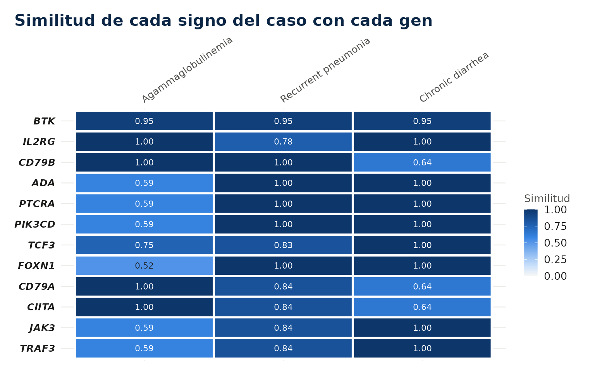
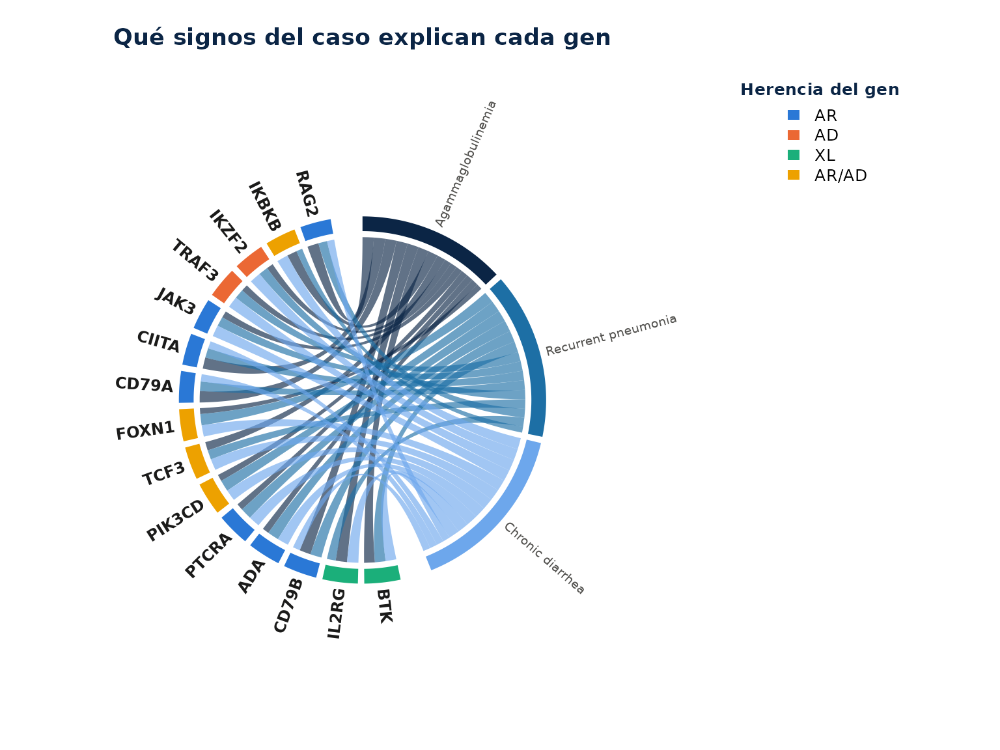
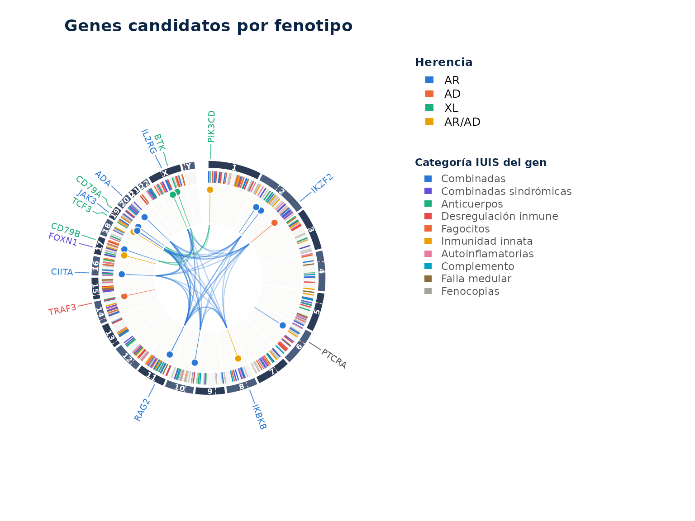
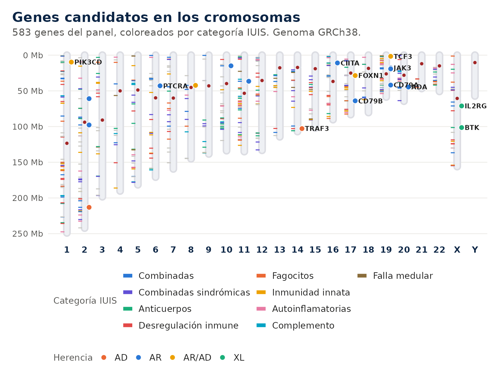
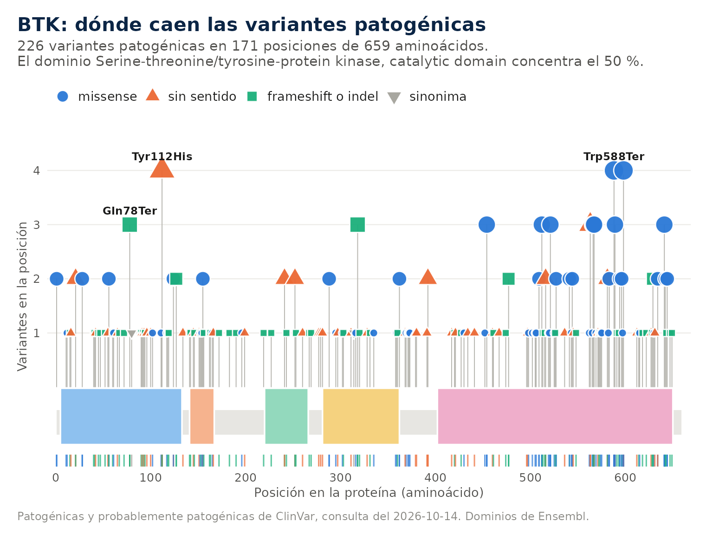
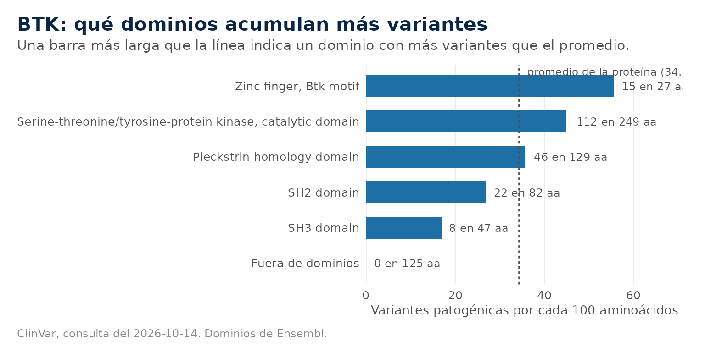

Ejemplo mínimo. Genes del panel que mejor explican un caso, sin conexión.
iei_buscar_fenotipo(c("agammaglobulinemia", "neumonía recurrente"), n = 5)
#> ℹ Fenotipo interpretado como:
#> • agammaglobulinemia → HP:0004432 Agammaglobulinemia
#> • neumonía recurrente → HP:0006532 Recurrent pneumonia
#> Genes candidatos por fenotipo (enfermedad)
#>
#> Fenotipo: HP:0004432 Agammaglobulinemia; HP:0006532 Recurrent pneumonia
#> # A tibble: 5 × 6
#> gen similitud especificidad enfermedad herencia categorias_iuis
#> <chr> <dbl> <dbl> <chr> <chr> <chr>
#> 1 CD79B 1 0.372 Agammaglobulinemia 6, … AR 3
#> 2 BLNK 1 0.359 Agammaglobulinemia 4, … AR 3
#> 3 IGLL1 1 0.349 Agammaglobulinemia 2, … AR 3
#> 4 BTK 0.948 0.308 X-linked agammaglobuli… XL 3
#> 5 CD79A 0.921 0.333 Agammaglobulinemia 3, … AR 3
#> Detalle de cada coincidencia en la columna coincidencias. Grafico: plot(x) o
#> autoplot(x).Arriba quedan los genes de agammaglobulinemia, CD79B, BLNK, IGLL1,
BTK y CD79A, con similitud cercana a 1. La columna
enfermedad nombra la enfermedad más parecida de cada
gen.
1. Caso de trabajo
La guía usa una tabla anotada armada a mano, con cinco variantes de un varón con agammaglobulinemia y neumonías recurrentes, para que corra sin conexión.
anotado <- tibble::tibble(
muestra = "P01",
gen = c("BTK", "RAG1", "RAG1", "CYBB", "NCF1"),
chr = c("X", "11", "11", "X", "7"),
pos = c(101354013L, 36573500L, 36574100L, 38050000L, 74779000L),
ref = "C", alt = "T",
genotipo = c("hemi", "het", "het", "hemi", "het"),
impacto = c("HIGH", "MODERATE", "HIGH", "LOW", "HIGH"),
consecuencia = c("splice_acceptor_variant", "missense_variant", "stop_gained",
"synonymous_variant", "frameshift_variant"),
af_gnomad = c(NA, 2e-5, NA, 0.004, NA),
clinvar = c("pathogenic", NA, NA, NA, NA),
clinvar_estrellas = c(2L, NA, NA, NA, NA),
revel = c(NA, 0.82, NA, NA, NA),
exon = c(NA, "2/2", "2/2", "9/13", "4/11"),
hgvs_c = c("ENST1:c.1632-2A>G", "ENST2:c.1186C>T", "ENST2:c.1871G>A", "ENST3:c.1314C>T", "ENST4:c.75delG"),
hgvs_p = c(NA, "ENSP2:p.Arg396Cys", "ENSP2:p.Trp624Ter", "ENSP3:p.Leu438=", "ENSP4:p.Tyr26fs")
)
attr(anotado, "ieiprio_sexo") <- c(P01 = "M")
prior <- iei_priorizar(anotado, fenotipo = c("agammaglobulinemia", "neumonía recurrente"))
#> ℹ Fenotipo interpretado como:
#> • agammaglobulinemia → HP:0004432 Agammaglobulinemia
#> • neumonía recurrente → HP:0006532 Recurrent pneumonia
prior
#> Resultado de ieiprio • 1 muestra, 5 variantes
#> Genoma ? • Ensembl VEP ? • prioridad alta 1, media 2, baja 2
#> # A tibble: 5 × 8
#> muestra gen hgvs_c hgvs_p genotipo puntaje categoria acmg
#> <chr> <chr> <chr> <chr> <chr> <dbl> <chr> <chr>
#> 1 P01 BTK c.1632-2A>G NA hemi 12.8 alta PVS1_Strong,…
#> 2 P01 RAG1 c.1871G>A p.Trp624Ter het 8.7 media PVS1_Moderat…
#> 3 P01 RAG1 c.1186C>T p.Arg396Cys het 6.7 media PM2_Supporti…
#> 4 P01 CYBB c.1314C>T p.Leu438= hemi 4.3 baja BS1
#> 5 P01 NCF1 c.75delG p.Tyr26fs het 4.3 baja PVS1, PM2_Su…2. Estructura del resultado
El resultado conserva todas las columnas de la anotación y agrega las de la priorización. Las más importantes son las siguientes.
| Columna | Contenido | Uso |
|---|---|---|
puntaje |
Suma de todos los componentes | Ordena la revisión; no es una clasificación |
categoria |
Alta, media o baja | Indica por dónde empezar |
razones |
Origen de cada punto | Es la columna que siempre se lee |
p_clinvar a p_fenotipo
|
Desglose por componente | Muestra si el puntaje viene de una o de varias fuentes |
acmg |
Criterios ACMG/AMP sugeridos | Punto de partida de la clasificación |
acmg_puntos, acmg_clase
|
Suma de Tavtigian y su clase | Orientativa, cambia al agregar evidencia |
nota |
Advertencias que no cambian el puntaje | Portador, fase sin confirmar, gen difícil, mosaico |
iei_tabla() devuelve una versión simple con las columnas
principales.
iei_tabla(prior)[, c("gen", "puntaje", "categoria", "acmg", "acmg_clase")]
#> # A tibble: 5 × 5
#> gen puntaje categoria acmg acmg_clase
#> <chr> <dbl> <chr> <chr> <chr>
#> 1 BTK 12.8 alta PVS1_Strong, PM2_Supporting, PP4 Probablem…
#> 2 RAG1 8.7 media PVS1_Moderate, PM2_Supporting, PM3_Support… Significa…
#> 3 RAG1 6.7 media PM2_Supporting, PM3_Supporting, PP3, PP4 Significa…
#> 4 CYBB 4.3 baja BS1 Probablem…
#> 5 NCF1 4.3 baja PVS1, PM2_Supporting Probablem…3. Lectura de las razones
Cada razón lleva su aporte entre paréntesis.
cat(prior$razones[1])
#> ClinVar patogénica, 2 estrellas (+4); impacto alto (+3); ausente en gnomAD (+1); hemicigota en gen ligado al X (+2); fenotipo parecido con X-linked agammaglobulinemia (ORPHA:47), similitud 0.95 y 2 de 2 términos exactos (+2.8)En la primera variante el puntaje combina ClinVar con dos estrellas, un impacto alto en el splicing, la ausencia en gnomAD, un genotipo hemicigoto compatible con un gen ligado al X y un fenotipo parecido al de la agammaglobulinemia ligada al X. Son cinco fuentes independientes que apuntan en la misma dirección, que es el perfil de una variante causal.
4. Conducta según el tipo de variante
4.1 Candidata principal
Una variante en prioridad alta con varias razones independientes es la candidata principal. El siguiente paso es confirmarla por un método independiente y completar la clasificación ACMG con la evidencia que el paquete no ve.
4.2 Dos heterocigotas en un gen recesivo
El paquete las marca como posible heterocigoto compuesto y sugiere
PM3_Supporting. El criterio completo exige saber que las variantes están
en alelos distintos. El paquete lo lee de la fase del propio VCF
(genotipos con | y el mismo bloque PS), y en
ese caso marca el compuesto en trans y sugiere PM3, o descarta el par si
las dos están en cis.
prior[prior$gen == "RAG1", c("genotipo", "acmg", "nota")]
#> # A tibble: 2 × 3
#> genotipo acmg nota
#> <chr> <chr> <chr>
#> 1 het PVS1_Moderate, PM2_Supporting, PM3_Supporting, PP4 Posible heterocig…
#> 2 het PM2_Supporting, PM3_Supporting, PP3, PP4 Posible heterocig…4.3 Una heterocigota en un gen recesivo
Corresponde a un portador y nunca pasa de prioridad media, porque una sola variante no explica una enfermedad recesiva. Si el fenotipo encaja bien, la segunda variante puede estar donde un exoma no mira, como una CNV, una región intrónica profunda o el promotor.
4.4 Genes con pseudogenes
NCF1, IKBKG, SBDS y PMS2 tienen pseudogenes casi idénticos, y otros genes varían en número de copias. En ellos una variante puede venir del pseudogén y la ausencia de variantes no descarta el gen. La nota de la variante lo indica.
prior$nota[prior$gen == "NCF1"]
#> [1] "Portador en gen recesivo; buscar segunda variante (CNV, intrónica) si el fenotipo encaja. NCF1 tiene dos pseudogenes (NCF1B y NCF1C) idénticos en un 99.5 %; su variante más común (c.75_76delGT) no se detecta bien con lecturas cortas. Un resultado negativo no descarta enfermedad granulomatosa crónica por NCF1."5. Clasificación ACMG por puntos
5.1 Los criterios y su fuerza
El estándar ACMG/AMP de 2015 describe 28 criterios, cada uno con una dirección (a favor de patogénica o de benigna) y una fuerza (muy fuerte, fuerte, moderada o de apoyo). Las reglas originales combinaban los criterios con una lista de casos. ClinGen propone sumarlos en puntos. Un criterio muy fuerte vale 8, uno fuerte 4, uno moderado 2 y uno de apoyo 1, y los benignos restan lo mismo.
| Puntos | Clase |
|---|---|
| 10 o más | Patogénica |
| 6 a 9 | Probablemente patogénica |
| 0 a 5 | Significado incierto |
| −1 a −6 | Probablemente benigna |
| −7 o menos, o BA1 | Benigna |
prior[, c("gen", "acmg", "acmg_puntos", "acmg_clase")]
#> # A tibble: 5 × 4
#> gen acmg acmg_puntos acmg_clase
#> <chr> <chr> <dbl> <chr>
#> 1 BTK PVS1_Strong, PM2_Supporting, PP4 6 Probablem…
#> 2 RAG1 PVS1_Moderate, PM2_Supporting, PM3_Supporting, P… 5 Significa…
#> 3 RAG1 PM2_Supporting, PM3_Supporting, PP3, PP4 4 Significa…
#> 4 CYBB BS1 -4 Probablem…
#> 5 NCF1 PVS1, PM2_Supporting 9 Probablem…5.2 El marco bayesiano
Los puntos no son arbitrarios. Tavtigian y colaboradores (2018) mostraron que las reglas ACMG se comportan como un clasificador bayesiano. Se parte de una probabilidad previa de patogenicidad de 0.10 y cada criterio multiplica las chances por una razón de verosimilitud. Un criterio muy fuerte equivale a una razón de 350, y las fuerzas menores son raíces de ese valor.
donde , , y son el número de criterios de apoyo, moderados, fuertes y muy fuertes a favor de patogenicidad.
Como cada exponente es un múltiplo de 1/8, la suma de puntos es directamente el exponente multiplicado por 8. Con 10 puntos la probabilidad posterior supera 0.99, el umbral de patogénica, y con 6 puntos supera 0.90, el de probablemente patogénica.

5.3 Lo que el paquete no ve
El paquete sugiere solo los criterios que puede decidir con la secuencia y las bases de datos. No conoce los estudios funcionales (PS3), el número de pacientes no relacionados con la variante (PS4), la segregación ni el origen de novo (PP1, BS4, PS2, PM6), ni las reglas específicas de ClinGen para cada gen. La clase es un punto de partida para el especialista.
6. Búsqueda por fenotipo
6.1 Términos HPO
La Human Phenotype Ontology asigna un código a cada signo clínico y los ordena de lo general a lo específico. No es una lista ni un árbol sino un grafo dirigido sin ciclos, en el que un término puede tener varios padres. Neumonía recurrente es a la vez una infección respiratoria recurrente y una anomalía del pulmón. La regla del camino verdadero dice que si un paciente tiene un término, también tiene todos sus ancestros, y es lo que permite comparar fenotipos parecidos aunque no sean idénticos.
Cada término tiene un contenido de información que mide qué tan raro es. Un término que comparten pocos genes, como agammaglobulinemia, informa mucho; uno que comparten casi todos, como anomalía del sistema inmune, informa poco. La similitud entre dos términos es la información del ancestro común más específico, y por eso dos signos emparentados de cerca valen casi lo mismo que dos idénticos.
iei_buscar_hpo("neumonia")
#> # A tibble: 15 × 4
#> hpo_id termino genes_panel ic
#> <chr> <chr> <int> <dbl>
#> 1 HP:0006532 Recurrent pneumonia 83 3.49
#> 2 HP:0002090 Pneumonia 68 2.72
#> 3 HP:0020102 Pneumocystis jirovecii pneumonia 12 6.09
#> 4 HP:0006538 Recurrent bronchopulmonary infections 10 5.74
#> 5 HP:0031950 Usual interstitial pneumonia 6 5.86
#> 6 HP:0002100 Recurrent aspiration pneumonia 4 5.04
#> 7 HP:0005366 Recurrent streptococcus pneumoniae infections 4 7.18
#> 8 HP:0011949 Acute infectious pneumonia 3 6.78
#> 9 HP:0006527 Lymphocytic interstitial pneumonia 3 7.18
#> 10 HP:0011945 Bronchiolitis obliterans organizing pneumonia 2 7.88
#> 11 HP:0011951 Aspiration pneumonia 1 3.9
#> 12 HP:0033670 Organizing pneumonia 1 8.57
#> 13 HP:0033214 Recurrent viral pneumonia 1 8.57
#> 14 HP:5210428 HSV pneumonia 0 8.57
#> 15 HP:5210302 VZV pneumonitis 0 8.57La columna genes_panel indica cuántos genes del panel
tienen el término y ic mide su especificidad. Todas las
funciones que reciben un fenotipo aceptan texto y muestran cómo lo
interpretaron, así que no es necesario buscar los códigos antes.
6.2 Genes candidatos
iei_buscar_fenotipo() compara el caso con cada
enfermedad de los genes del panel y ordena los genes por la enfermedad
más parecida, que aparece en la columna enfermedad.
b <- iei_buscar_fenotipo(c("agammaglobulinemia", "neumonía recurrente", "diarrea crónica"))
#> ℹ Fenotipo interpretado como:
#> • agammaglobulinemia → HP:0004432 Agammaglobulinemia
#> • neumonía recurrente → HP:0006532 Recurrent pneumonia
#> • diarrea crónica → HP:0002028 Chronic diarrhea
b
#> Genes candidatos por fenotipo (enfermedad)
#> Fenotipo: HP:0004432 Agammaglobulinemia; HP:0006532 Recurrent pneumonia;
#> HP:0002028 Chronic diarrhea
#> # A tibble: 20 × 6
#> gen similitud especificidad enfermedad herencia categorias_iuis
#> <chr> <dbl> <dbl> <chr> <chr> <chr>
#> 1 BTK 0.948 0.341 X-linked agammaglob… XL 3
#> 2 IL2RG 0.926 0.348 Severe combined imm… XL 1
#> 3 CD79B 0.881 0.404 Agammaglobulinemia … AR 3
#> 4 ADA 0.864 0.301 Severe combined imm… AR 1
#> 5 PTCRA 0.864 0.271 Immunodeficiency 12… AR NA
#> 6 PIK3CD 0.864 0.24 Immunodeficiency 14… AR/AD 3
#> 7 TCF3 0.861 0.355 Agammaglobulinemia … AR/AD 3
#> 8 FOXN1 0.839 0.337 Immune defect due t… AR/AD 2
#> 9 CD79A 0.829 0.367 Agammaglobulinemia … AR 3
#> 10 CIITA 0.829 0.305 Bare lymphocyte syn… AR 1
#> 11 JAK3 0.812 0.447 Scid, autosomal rec… AR 1
#> 12 TRAF3 0.812 0.235 Immunodeficiency 13… AD 4;7
#> 13 IKZF2 0.809 0.235 Immunodysregulation… AD 1
#> 14 IKBKB 0.807 0.492 Immunodeficiency 15… AR/AD 1
#> 15 RAG2 0.807 0.273 Omenn syndrome (OMI… AR 1
#> 16 RAG1 0.807 0.272 Omenn syndrome (OMI… AR 1
#> 17 DCLRE1C 0.807 0.25 Omenn syndrome (OMI… AR 1
#> 18 RFXANK 0.794 0.381 MHC class II defici… AR 1
#> 19 ZAP70 0.791 0.362 Immunodeficiency 48… AR 1;4
#> 20 REL 0.791 0.107 Immunodeficiency 92… AR NA
#> Detalle de cada coincidencia en la columna coincidencias. Grafico: plot(x) o
#> autoplot(x).La similitud va de 0 a 1. Cuando varios genes llegan al
máximo, la especificidad desempata a favor del gen cuyo
fenotipo conocido gira en torno a lo descrito. La columna
coincidencias muestra con qué término de la enfermedad se
emparejó cada signo del caso.
b$coincidencias[b$gen == "BTK"]
#> [1] "Agammaglobulinemia (igual); Recurrent pneumonia (igual); Chronic diarrhea (igual)"
plot(b)
6.3 Cómo ver la búsqueda
El mapa muestra la similitud de cada signo del caso con cada gen y permite ver qué signo sostiene a cada candidato.
plot(b, tipo = "mapa", n = 12)
El diagrama de cuerdas cuenta lo mismo con otra forma. Cada signo del caso está a la derecha y cada gen a la izquierda, y el grosor de la cuerda es la similitud entre ambos. Un gen con muchas cuerdas gruesas explica varios signos a la vez.
plot(b, tipo = "acordes")
Sobre el genoma, cada candidato es una barra tan alta como su similitud y del color de su herencia. Los candidatos que comparten categoría IUIS se unen por dentro, de modo que un grupo de líneas del mismo color indica que varios genes de una misma familia de enfermedades explican el caso.
iei_circos(b)
El cariograma ubica a los mismos candidatos en los cromosomas, con los genes del panel a la izquierda de cada uno.

6.4 Signos ausentes
Un signo que el paciente no tiene también orienta. Un varón con trombocitopenia e infecciones recurrentes sin eccema encaja mejor con la trombocitopenia ligada al X que con el síndrome de Wiskott-Aldrich completo, aunque ambos son del gen WAS. Cada signo ausente resta según su frecuencia en la enfermedad.
iei_buscar_fenotipo(c("trombocitopenia", "infecciones recurrentes"), ausentes = "eccema", n = 8)
#> ℹ Fenotipo interpretado como:
#> • trombocitopenia → HP:0001873 Thrombocytopenia
#> • infecciones recurrentes → HP:0002719 Recurrent infections
#> ℹ Fenotipo interpretado como:
#> • eccema → HP:0000964 Eczematoid dermatitis
#> Genes candidatos por fenotipo (enfermedad)
#>
#> Fenotipo: HP:0001873 Thrombocytopenia; HP:0002719 Recurrent infections
#>
#> Ausentes: HP:0000964 Eczematoid dermatitis
#> # A tibble: 8 × 6
#> gen similitud especificidad enfermedad herencia categorias_iuis
#> <chr> <dbl> <dbl> <chr> <chr> <chr>
#> 1 VPS45 1 0.325 Neutropenia, severe c… AR 5
#> 2 IRF8 1 0.322 Immunodeficiency 32B,… AR/AD 6
#> 3 ITK 1 0.283 Lymphoproliferative s… AR 4
#> 4 LRBA 1 0.256 Immunodeficiency, com… AR 4
#> 5 LCK 1 0.253 Immunodeficiency 22 (… AR 1
#> 6 SH2D1A 1 0.253 Lymphoproliferative s… XL 4
#> 7 MAGT1 1 0.244 Immunodeficiency, X-l… XL 4
#> 8 XIAP 1 0.231 Lymphoproliferative s… XL 4
#> Detalle de cada coincidencia en la columna coincidencias. Grafico: plot(x) o
#> autoplot(x).6.5 Significancia estadística
Un gen con un fenotipo muy amplio puede quedar arriba con casi
cualquier descripción. Con p_valor = TRUE la similitud de
cada gen se compara con la que obtiene frente a fenotipos al azar del
mismo tamaño. Un valor p bajo indica que el parecido es propio del
caso.
iei_buscar_fenotipo(c("agammaglobulinemia", "neumonía recurrente"), n = 6, p_valor = TRUE, permutaciones = 100)
#> ℹ Fenotipo interpretado como:
#> • agammaglobulinemia → HP:0004432 Agammaglobulinemia
#> • neumonía recurrente → HP:0006532 Recurrent pneumonia
#> Genes candidatos por fenotipo (enfermedad)
#>
#> Fenotipo: HP:0004432 Agammaglobulinemia; HP:0006532 Recurrent pneumonia
#> # A tibble: 6 × 7
#> gen similitud especificidad p_valor enfermedad herencia categorias_iuis
#> <chr> <dbl> <dbl> <dbl> <chr> <chr> <chr>
#> 1 CD79B 1 0.372 0.0099 Agammaglobulin… AR 3
#> 2 BLNK 1 0.359 0.0099 Agammaglobulin… AR 3
#> 3 IGLL1 1 0.349 0.0099 Agammaglobulin… AR 3
#> 4 BTK 0.948 0.308 0.0099 X-linked agamm… XL 3
#> 5 CD79A 0.921 0.333 0.02 Agammaglobulin… AR 3
#> 6 CIITA 0.921 0.277 0.02 Bare lymphocyt… AR 1
#> Detalle de cada coincidencia en la columna coincidencias. Grafico: plot(x) o
#> autoplot(x).6.6 Fenotipo en la priorización
El mismo cálculo entra en iei_priorizar() como
componente de fenotipo, con un máximo de 3 puntos, y la razón del
puntaje nombra la enfermedad más parecida. Los signos ausentes se
indican con fenotipo_ausente.
iei_priorizar(anotado, fenotipo = c("agammaglobulinemia", "neumonía recurrente"),
fenotipo_ausente = "eccema")[, c("gen", "p_fenotipo", "puntaje")]
#> ℹ Fenotipo interpretado como:
#> • agammaglobulinemia → HP:0004432 Agammaglobulinemia
#> • neumonía recurrente → HP:0006532 Recurrent pneumonia
#> ℹ Fenotipo interpretado como:
#> • eccema → HP:0000964 Eczematoid dermatitis
#> # A tibble: 5 × 3
#> gen p_fenotipo puntaje
#> <chr> <dbl> <dbl>
#> 1 BTK 2.8 12.8
#> 2 RAG1 2.1 8.1
#> 3 RAG1 2.1 6.1
#> 4 CYBB 1.5 3.5
#> 5 NCF1 1.5 3.57. Ficha de un gen
iei_gen() reúne lo que el paquete sabe de un gen y
acepta el símbolo oficial o un alias.
iei_gen("TACI", clinvar = FALSE, proteina = FALSE)
#>
#> ── TNFRSF13B ──
#>
#> • Herencia: AR/AD ─ evidencia en PanelApp: rojo
#> • Mecanismo: pérdida de función o no especificado
#> • Categoría IUIS: 3 Deficiencias predominantemente de anticuerpos (PanelApp,
#> tabla IUIS)
#> • Alias: CD267, IGAD2, TACI
#> • Ubicación: 17:16,929,816-16,972,118 (GRCh38)
#> • Fenotipos en PanelApp: Immunodeficiency, common variable, 2; Variable
#> clinical expression; Common variable immunodeficiency disorders (CVID) (y 7
#> mas)
#> • HPO: 28 términos; los más específicos: Partial absence of specific antibody
#> response to unconjugated pneumococcus polysaccharide, Follicular hyperplasia,
#> Recurrent bronchitis, Recurrent infection of the gastrointestinal tract,
#> Combined immunodeficiency, Recurrent sinopulmonary infections
#> Grafico: plot(x) o autoplot(x); variantes de ClinVar en x$clinvar$variantes.Las categorías IUIS indican su fuente.
PanelApp, tabla IUIS significa que PanelApp nombra la tabla
del gen, PanelApp, fenotipo que se dedujo de sus fenotipos
y curado que se asignó a mano. El mecanismo indica si la
enfermedad es por ganancia de función, lo que cambia la puntuación de
las variantes nulas.
Con conexión, la ficha agrega las variantes patogénicas de ClinVar y la proteína con sus dominios, lo que permite ver si una variante nueva cae en una zona con muchas patogénicas conocidas.

En el gráfico de piruletas cada palo es una posición de la proteína con variantes patogénicas, su altura es cuántas hay y su forma y color indican el tipo de cambio. Los dominios se dibujan como bloques sobre la proteína. Una variante nueva que cae entre muchas patogénicas del mismo dominio aporta evidencia para PM1, y una que cae en el mismo codón que una patogénica aporta PM5 o PS1.
plot(g, tipo = "dominios")
8. El reporte HTML
iei_reporte() reúne todo lo anterior en un archivo por
paciente y se adapta a la entrada. Con un VCF abre con el resumen y el
control de calidad, con los histogramas de profundidad, calidad de
genotipo y fracción alélica. Con Sanger ese bloque no aparece y en su
lugar va el cromatograma de cada variante, como imagen dentro del mismo
HTML. Con texto queda la tabla y las fichas.
Cada ficha trae el diagrama de la proteína, la clase ACMG y los enlaces a PanelApp, gnomAD, ClinVar y UCSC. Al final quedan las CNV del VCF, la coincidencia con el fenotipo, el filtrado paso a paso y las versiones de cada fuente. El reporte se imprime en A4.